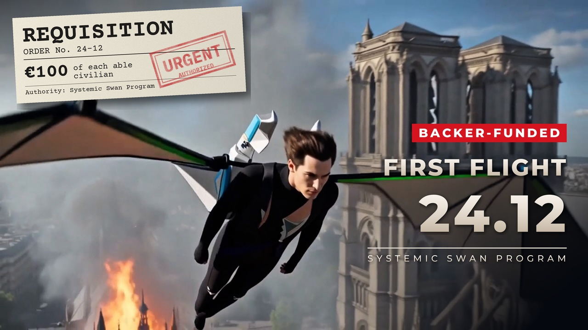
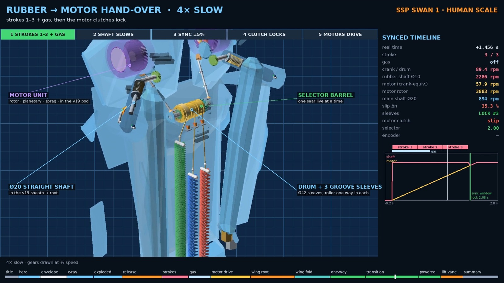
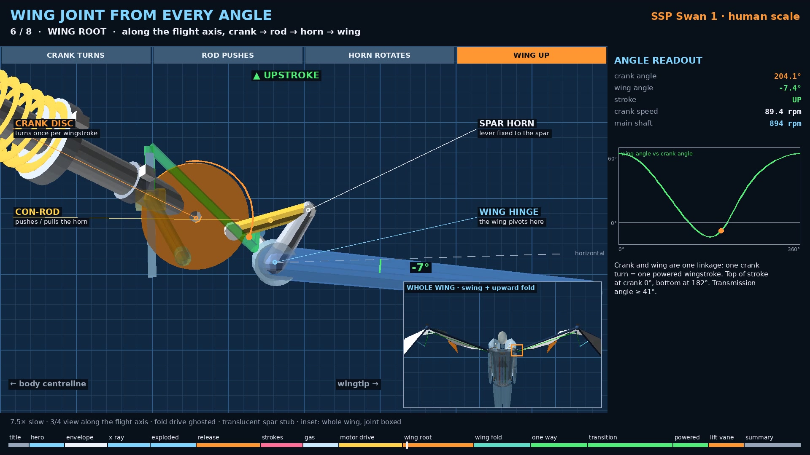
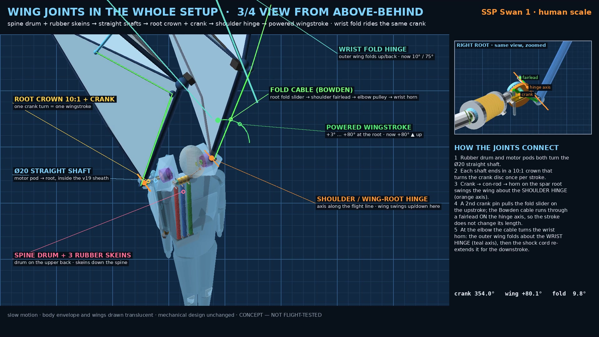

REQUISITION — €100 FIRST FLIGHT CREDIT
€100 of each able civilian. Authority: Systemic Swan Program.
Your €100 supports the build of the human-scale prototype. If SSP later offers flight sessions, the full €100 counts toward your first one. All or nothing: if €6,000 is not reached by 11 Dec 2026, everyone gets a full refund automatically.
Requisition €100By paying you accept the terms. 14-day withdrawal right with full refund.

What it is
SSP Swan 1 is a mechanical research prototype: a body-worn wing with a powered-wingstroke drive, packed into a slim back unit (44 × 87 × 18 cm). Three rubber strokes and a short gas pulse (under 120 dB) give the start. Then a small motor takes over the wing stroke through one-way clutches. No jet, no extra units. Just the wing, the back unit and the drive.
How it works
- Rubber strokes. Three rubber skeins each drive the shaft during their own stroke.
- Gas pulse. A short, capped pulse adds thrust at the start.
- Hand-over. The motors catch the shaft speed, their clutches lock, the rubber freewheels. No electronics in that path.
- To the wing. Shaft, 10:1 crown, crank and con-rod. One crank turn is one full stroke; the outer wing folds up on the upstroke.



Where it stands
The full 3D design and 20 see-through blueprint sheets are done. A 1:5 scale model is self-funded and being built now; its first 1 m stand test will be filmed and shared, whether it works or not. The €6,000 builds and stand/ground-tests the human-scale prototype. No human flights are part of this campaign.
Risks
- This is a research prototype, not an aircraft. Testing is on stands and on the ground.
- Nothing has flown yet. Figures come from calculation and simulation.
- The flight credit only applies if SSP ever offers flight sessions that meet legal, safety and insurance rules. That may never happen.
- Parts and timelines can slip. Every result is shared.
Images and trailer were made with help from AI tools. The design decisions and the physical builds are real work.